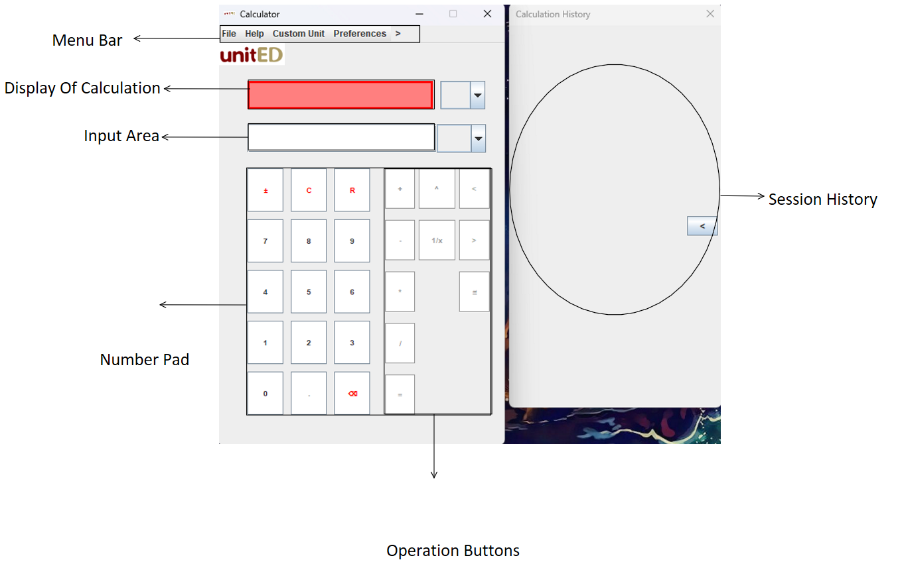
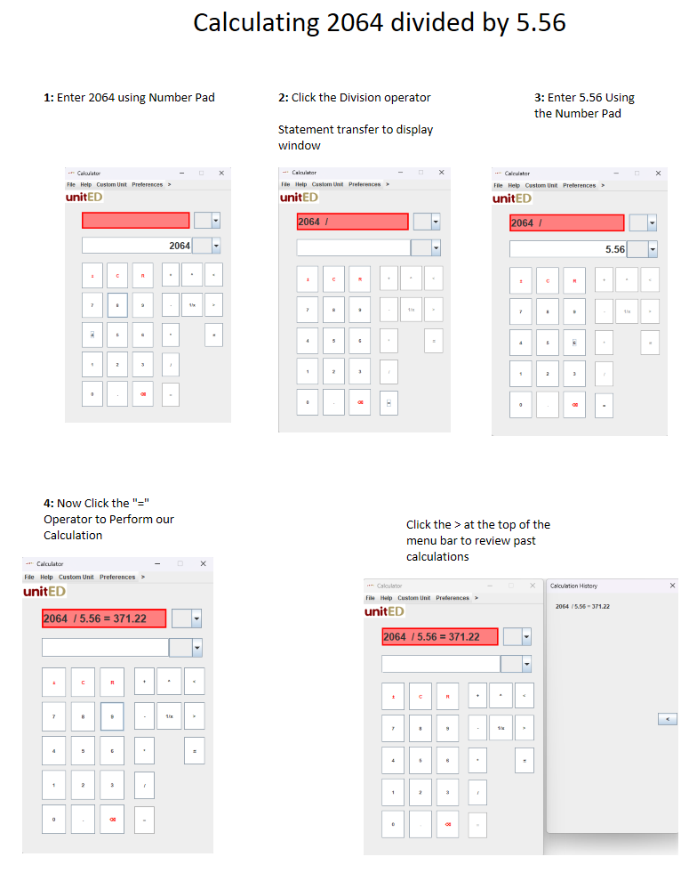
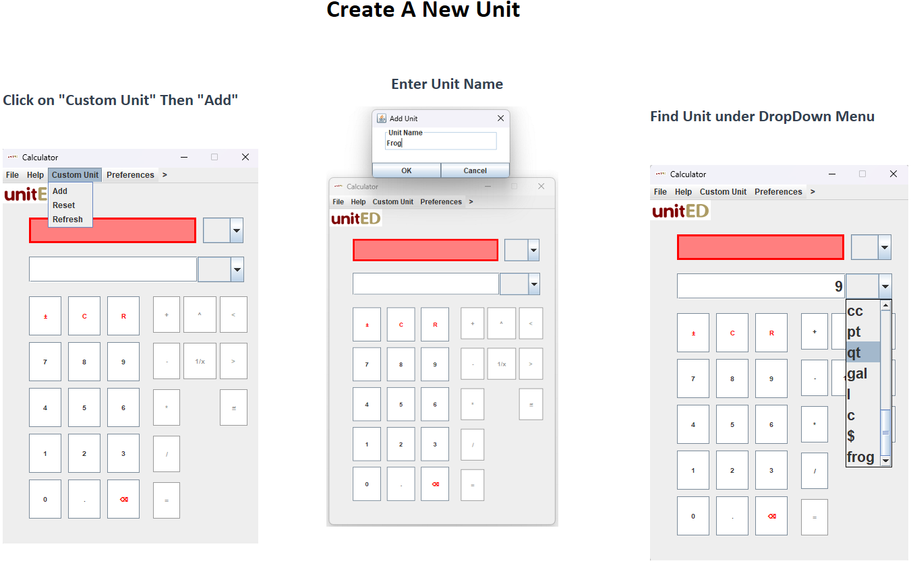
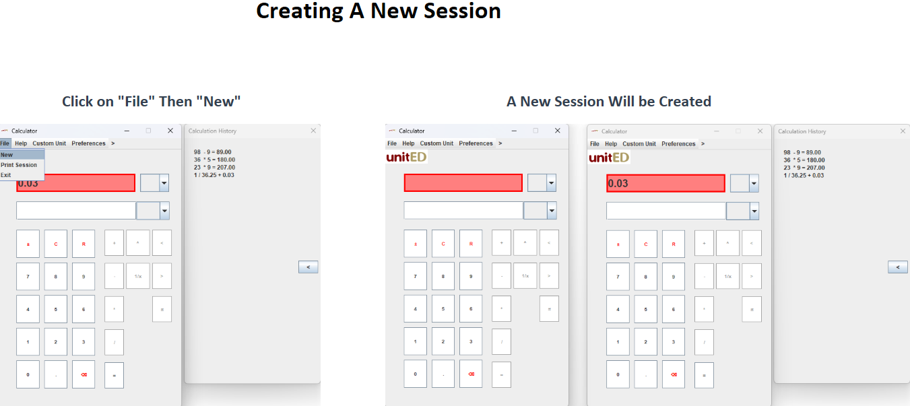

Menu Bar: The menu bar contains various options for configuring the calculator.
Buttons: Each button on the calculator performs a specific operation. For example, the addition button (+) is used to add two numbers together.

To perform basic calculations, use the number pad to enter values and the corresponding operator buttons (+, -, *, /, =).
To properly calculate your desired equation, end the statement with an "=" to see the calculation.
Refer to Visuals below to see how the calculator may be used.

Creating New Units: To create a new unit, press the 'Create New Unit' button followed by your desired unit title.
Printing Session History: To print the session history, go to the menu bar and select the 'Print' option.
Viewing Session History: To view the session history, navigate to the menu bar and select the 'History' option.
Starting a New Session: To start a new session, click on "file" then "new" and a new session will start.
Visual Refer to Visual Aid below to see New Units creation and to start a new session.


If you encounter any issues, try exiting the calculator app and restarting it.
Q: How do I clear the calculator's memory?
A: To clear the calculator's memory, press the 'Clear' button.
Q: Can I perform calculations with decimal numbers?
A: Yes, you can perform calculations with decimal numbers using the decimal point button (.)
Q: How can I switch between different unit systems?
A: To switch between unit systems, go to the menu bar and select the desired unit system.
Q: Is there a way to undo or redo calculations?
A: The calculator does not have an undo or redo feature but the clear and reset button clears the display.
Q: How can I use a unit of my own?
A: You can create your own unit by clicking on "Custom Units" then "Add Custom Unit" .